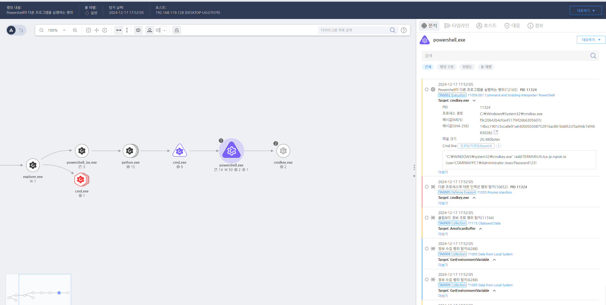

T1133.000.01 ngrok을 이용한 RDP 접속
D3FEND
MITRE ATT&CK 액션을 기준으로 대응 방안을 작성
Detection
ProcessCreate AND CmdLine: cmdkey AND ngrok
Detection(EDR)

Response
원격 서비스 제한, 암호화된 통신 사용, 다단계 인증(MFA), 보안 패치 관리, 네트워크 접근 제어 및 로그 모니터링 등을 통해 외부에서의 접근을 제한하고, 악성 트래픽을 실시간으로 차단하는 방식입니다. 원격 서비스가 외부와 연결되는 지점이기 때문에, 이들에 대한 보안을 강화하고, 접근을 최소화하는 것이 중요합니다.
Mitigations
원격 서비스에 대한 액세스 제한
- 불필요한 원격 서비스 비활성화
- 조직의 요구사항에 맞지 않거나 사용되지 않는 원격 서비스(예: RDP, SSH 등)를 비활성화합니다.
- 이를 통해 공격자가 해당 서비스에 접근할 수 없도록 방지합니다.
- 네트워크 접근 제어
- 원격 서비스에 대한 액세스를 특정 IP 또는 IP 범위에 제한하여, 외부 네트워크로부터의 불필요한 접근을 차단합니다.
- 방화벽을 설정하여 허용된 네트워크 범위에서만 원격 서비스를 사용할 수 있도록 합니다.
멀티팩터 인증(MFA) 적용
- 다단계 인증(MFA) 적용
- 원격 서비스에 대한 접근 시 다단계 인증을 필수로 설정하여, 계정 침해나 비밀번호 유출만으로는 원격 서비스에 접근할 수 없도록 만듭니다.
- OTP, 하드웨어 토큰 등 추가적인 인증 수단을 사용하여 원격 로그인 시 이중 인증을 요구합니다.
- 이를 통해 공격자가 자격 증명을 탈취하더라도 불법 접근을 방지할 수 있습니다.
암호화된 통신 사용
- 암호화된 프로토콜 사용
- HTTP 대신 HTTPS, SSH 대신 SFTP 등, 암호화된 프로토콜을 사용하여 데이터가 전송되는 동안 중간자 공격이나 데이터 탈취를 방지합니다.
- 원격 서비스에 대한 모든 통신은 암호화하여 보안 수준을 높입니다.
- SSL/TLS 인증서 관리
- HTTPS와 같은 암호화된 프로토콜을 사용하려면 유효한 SSL/TLS 인증서를 설정하고 관리합니다.
- 이를 통해 통신이 안전하게 보호되고, 신뢰할 수 있는 인증서를 사용하여 공격자가 중간자 공격을 시도하지 못하도록 합니다.
정기적인 보안 패치 및 업데이트
- 원격 서비스 및 애플리케이션 패치
- 원격 접속 서비스를 제공하는 애플리케이션 및 시스템의 보안 패치를 정기적으로 적용하여 알려진 취약점이 악용되지 않도록 합니다.
- 특히, 원격 서비스(예: RDP, SSH)에 관련된 보안 패치를 신속하게 적용하여 공격자가 취약점을 이용하지 못하도록 합니다.
- 소프트웨어 업데이트
- 애플리케이션이나 서버의 최신 버전을 유지하여, 보안 취약점이 발생하지 않도록 예방합니다.
접근 기록 및 로그 관리
- 접속 기록 및 모니터링
- 원격 서비스에 대한 접속 기록을 실시간으로 모니터링하고 기록합니다.
- 이를 통해 비정상적인 활동을 탐지하고 빠르게 대응할 수 있습니다.
- 로그 관리 및 감사
- 원격 접속 활동에 대한 로그를 정기적으로 분석하여 이상 징후를 파악하고, 의심스러운 행동을 즉시 차단합니다.
- 로그 관리 솔루션을 사용하여 이상 트래픽 및 불법 접근을 추적합니다.
방화벽 및 네트워크 세분화
- 방화벽 사용
- 원격 접속을 제공하는 포트에 대해 방화벽 규칙을 설정하여, 불필요한 포트나 외부 네트워크로부터의 접근을 차단합니다.
- 예를 들어, RDP(3389번 포트) 포트를 외부에서 직접 열지 않고, VPN을 통해 안전한 접근만 허용합니다.
- 네트워크 분리 및 세분화
- 민감한 시스템과 일반 시스템을 분리하여, 원격 서비스가 직접적으로 민감한 시스템에 접근할 수 없도록 네트워크를 세분화합니다.
- VLAN 또는 서브넷을 사용하여 시스템 간의 경계를 명확히 합니다.
원격 접속 서비스 최소화
- 최소 권한 원칙
- 원격 서비스를 사용하는 사용자에게 필요 최소한의 권한만 부여하여, 불필요한 리소스 접근을 제한합니다.
- 이를 통해 권한 상승을 통한 악의적인 행동을 방지합니다.
- 원격 접속 서비스의 필요성 재검토
- 원격 접속 서비스가 정말 필요한지 다시 평가하고, 필요 없는 경우 서비스를 비활성화하거나 제한합니다.
VPN 및 안전한 연결 사용
- VPN 사용
- 외부에서 내부 네트워크에 접근하는 경우, 반드시 VPN(Virtual Private Network)을 통해 접근을 제한합니다.
- 이를 통해 외부에서의 접근을 암호화하고, 안전한 터널을 통해 데이터가 전송될 수 있도록 합니다.
- 제로 트러스트 보안 모델 적용
- VPN 외에도 제로 트러스트(Zero Trust) 보안 모델을 적용하여 모든 접근을 신뢰하지 않고, 모든 사용자의 인증 및 권한 검증을 거쳐서만 시스템에 접근을 허용합니다.
피싱 및 사회 공학 공격 방지
- 피싱 방지 훈련
- 원격 서비스의 인증 정보가 피싱 공격을 통해 탈취되지 않도록, 직원들에게 피싱과 사회 공학 공격에 대한 정기적인 교육을 실시합니다.
- 보안 캠페인
- 사용자가 의심스러운 이메일이나 링크를 클릭하지 않도록 경고하는 캠페인을 진행하여, 보안 인식을 높입니다.
보안 솔루션 및 엔드포인트 보호
- 엔드포인트 보호 솔루션 설치
- 원격 서비스에 접근하는 모든 장치에 보안 소프트웨어를 설치하여 악성 코드나 랜섬웨어가 내부 네트워크로 침투하지 않도록 합니다.
- 정기적인 시스템 검사
- 엔드포인트 장치 및 서버에 대한 정기적인 보안 검사를 통해 취약점을 조기에 발견하고 수정합니다.
Affected Techniques
Action 실행시 함께 영향을 받는 다른 Techniqes
| D3FEND |
| D3-PWSAM Proxy-based Web Server Access Mediation |